Mockups of a fuller Claude Code client assembled from Windows parts. Every window, tab, list, button, meter and dialog in these images was cut from a screendump of a real Windows XP machine (or an existing 3.11 capture); the text a real build would put in them is drawn in the real XP fonts. Click any mockup to see it at full size. Local review page; not published.
Captured on the studio VM, 2026-11-12. The compositor is compose.py; captures are in captures/.
| Claude Code element | Windows part | Why it earns its space |
|---|---|---|
| Prompt input (multi-line, history) | Notepad's Find box (today) / the Run dialog's combo / Explorer's Address bar | Where you type. The Run combo adds a real drop-down for history and slash completions. |
| Slash commands with autocomplete | The Run dialog's auto-complete drop-down | Typing "/" lists /compact /context /cost /model with one-line help. |
| @-file mentions | Explorer's folder tree (and the Open dialog list) | Click or type @ to pull a file from C:\b3\work into the prompt. |
| Tool-call blocks with folded output | Notepad / WordPad transcript | "• Run(...)" then "└ first lines … +N lines", as Claude Code prints them. |
| Edit diffs (+/- lines) | WordPad's RichEdit (real red/green highlight) | The single most useful upgrade over plain Notepad: you can read what changed. |
| Permission prompts | MessageBox (Yes / No / Cancel) | Allow once, deny, always allow this command. A real modal, so it cannot be missed. |
| To-do list (TodoWrite) | Windows Components wizard check list | Checked = done, highlighted = in progress, empty = pending. |
| Spinner: verb, elapsed, tokens, "esc to interrupt" | The shell's copy animation (flying papers) + its progress bar | Shows a tool is working and how long; Cancel = Esc. |
| Status line: model, context %, cost, cwd | WordPad / Explorer status bar | Always-visible facts in a strip you already know how to read. |
| Context usage (/context) | Disk Defragmenter's map; the drive Properties pie | Unmovable = system prompt + tools, contiguous = cached history, fragmented = new this turn, free = room left. |
| Compaction (/compact) | Defragmenter's Defragment button + "after" map | The metaphor is exact: compaction squeezes the history to free space. |
| Usage and cost | Task Manager Performance tab (meters, history graphs, totals) | Context %, output rate, tokens in/cached/out, session/day/month spend. |
| Running tools / background tasks | Task Manager Processes list | One row per running tool with time and output size; End Process = stop it. |
| Effort / model picker | Mouse Properties trackbar; Volume Control sliders; a property-sheet combo | Low ↔ max effort; Haiku / Sonnet. |
| Plan mode, auto-accept edits | Check boxes (Mouse Properties / Volume Control "Mute") | The two modes people toggle most, one click each. |
| Queued messages while busy | The prompt stays live; queued lines show greyed in the transcript | Type the next thing while Claude works. |
| Session history / resume | Explorer Back / Forward; a "Sessions" tab | Go back to an earlier conversation. |
| Memory (CLAUDE.md) | A file in the Explorer tree; a "Memory" settings tab | Open and edit what Claude is told every session. |
| Done notification | A tray balloon tip | Tells you a long turn finished while you looked elsewhere. |
| Clock / time | Date and Time's analog clock and calendar | Kept from today's build: honest, readable, and the soul of the piece. |
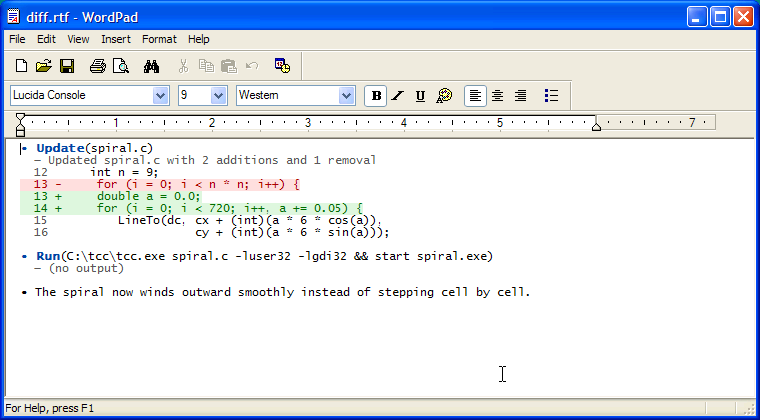
WordPad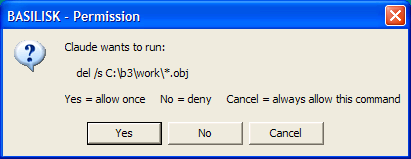
MessageBox (from a script)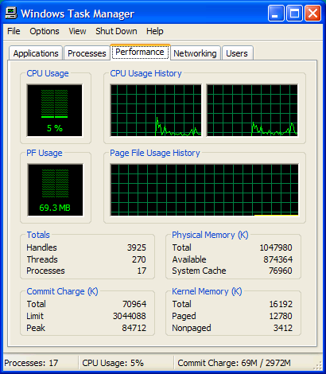
Task Manager · Performance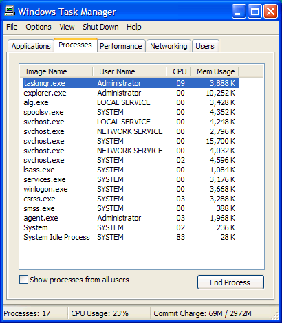
Task Manager · Processes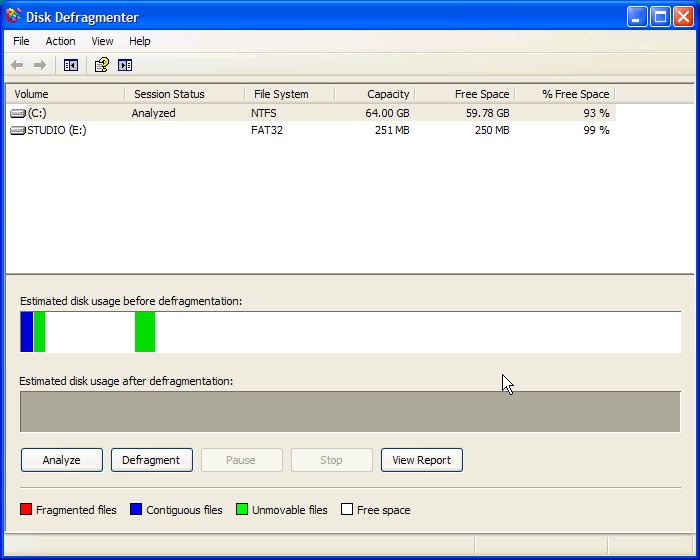
Disk Defragmenter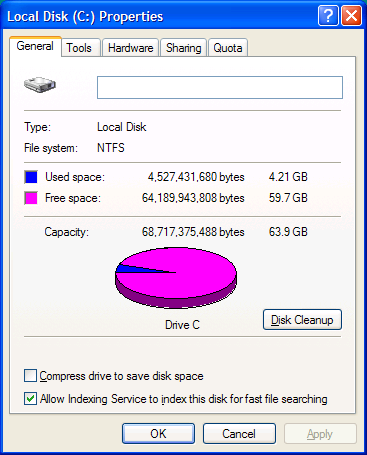
Local Disk Properties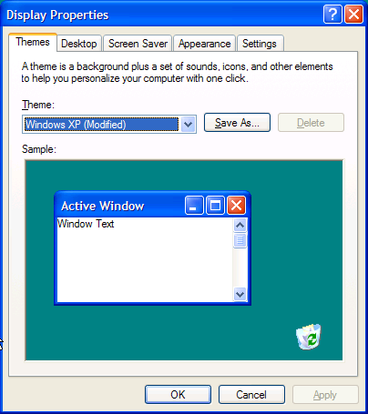
Display Properties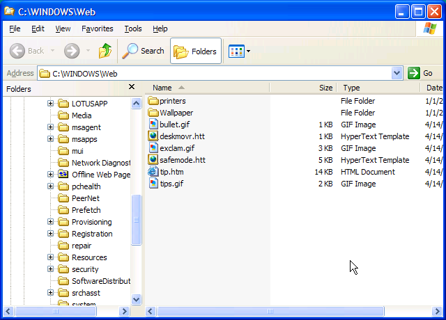
Explorer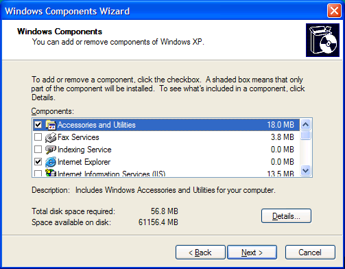
Windows Components wizard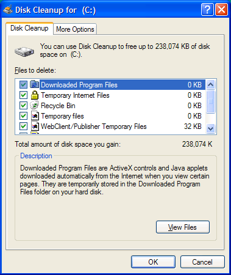
Disk Cleanup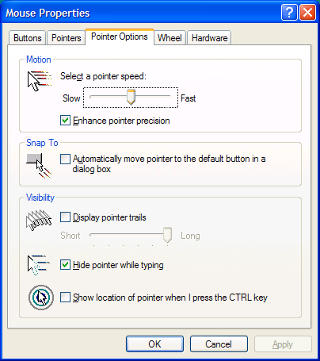
Mouse Properties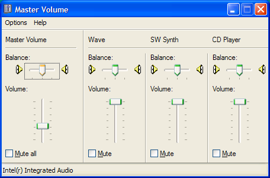
Volume Control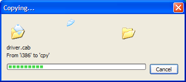
Copying… (shell)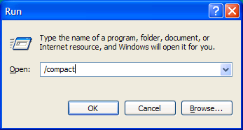
RunNot on the Windows Secrets page but captured or used here: Disk Defragmenter, Task Manager, Disk Cleanup, the Windows Components wizard, the shell copy dialog, Volume Control, Mouse Properties, the Run dialog and WordPad. Worth capturing next: the tray balloon tip, HyperTerminal (a true VT100 transcript), Outlook Express's three panes (sessions), WinHelp/HTML Help (/help), the File Download security warning, and System Restore's calendar (checkpoints / undo).
Today's BASILISK III, plus the three things it most lacks: a status line, a context gauge and the to-do list.
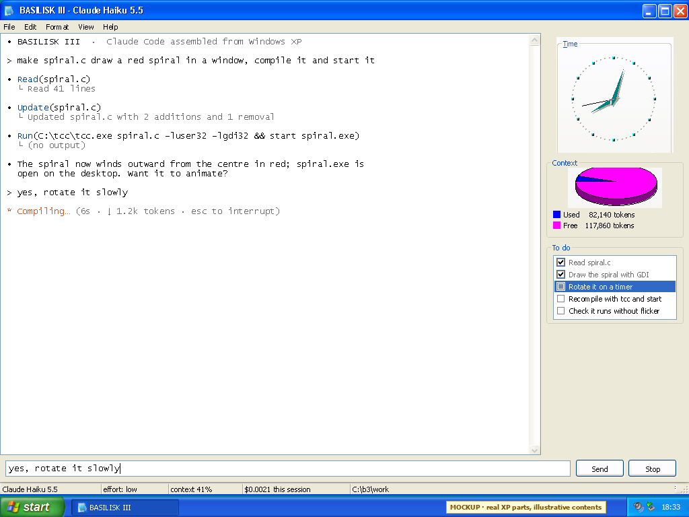
| Part | Taken from | Does | Space |
|---|---|---|---|
| Transcript | Notepad's edit | scrollback, tool blocks | 78% |
| Prompt + Send/Stop | Notepad's own Find dialog | input, Esc | 5% |
| Status line | a status bar (Notepad has one, off by default) | model · effort · context % · cost · cwd | 3% |
| Clock | Date and Time page | time (kept) | — |
| Context gauge | drive Properties pie | used / free tokens | — |
| To do | Windows Components check list | Claude's plan, live | sidebar 22% |
Feasibility. Small step from what runs today. Notepad's own status bar only shows with word wrap off and holds only "Ln, Col", so the status line is a borrowed status bar (WordPad's) or our own msctls_statusbar32 in Notepad. The pie is drawn by the shell from disk numbers we cannot feed: in practice we would draw a matching pie ourselves in a borrowed static. Components' list is a plain check-box list view we can fill (LVM_INSERTITEM across processes needs memory allocated in that process, as we already do for the desktop).
Display Properties' tab strip turns the client into Chat | Tasks | Files | Usage | Settings.
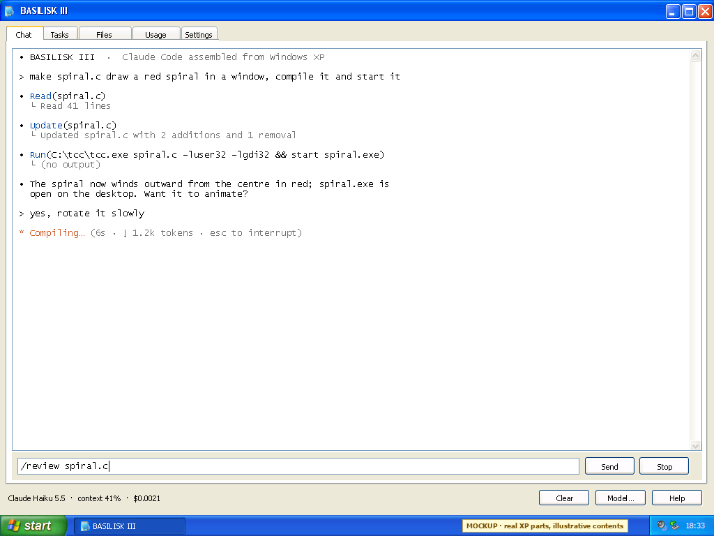
| Part | Taken from | Does | Space |
|---|---|---|---|
| Tabs | Display Properties (Luna tab control) | switch modality | 3% |
| Chat page | tab-page body + Notepad edit + Find bar | the conversation | 85% |
| Buttons | the sheet's OK/Cancel/Help row, relabelled | Clear · Model… · Help | 4% |
Feasibility. A property sheet is the most natural container on XP: each page is a dialog, so other donors (Task Manager's graphs, a check list) can be hosted per tab. Lesson from today: a themed page moved while visible leaves stale copies of its controls, so lay pages out hidden and show once. Relabelling tabs is TCM_SETITEM with a pointer, so it needs process memory like the list views.
Task Manager's tabs as Chat | Tools | Usage | Model | Sessions; the Usage tab shown.
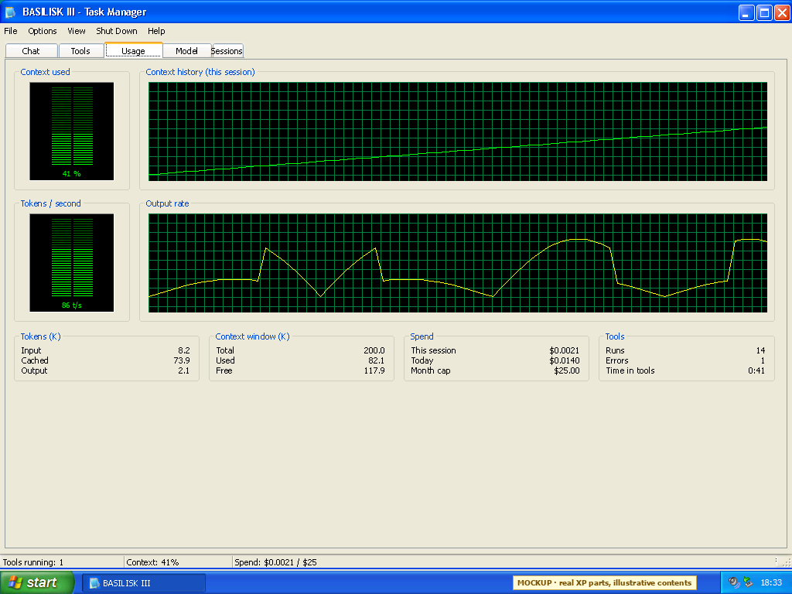
| Part | Taken from | Does | Space |
|---|---|---|---|
| Context meter + history | Task Manager CPU meter and graph | context % now and over the session | 35% |
| Output rate meter + graph | Task Manager PF meter and graph | tokens/s while streaming | 35% |
| Totals boxes | Totals / Physical / Commit / Kernel groups | tokens, context window, spend, tools | 20% |
| Status bar | Task Manager status bar | tools running, context, spend vs cap | 3% |
Feasibility. Task Manager owner-draws its meters and graphs from its own counters, so we cannot feed its graphs: we would host Task Manager's frame and tab strip and draw identical meters ourselves (or, honestly, show XP's real CPU graph while tools run). The Processes tab, however, is a real list view we can fill with running tools, and End Process works as Stop.
Disk Defragmenter's analysis panel under the transcript, mapping the context window.
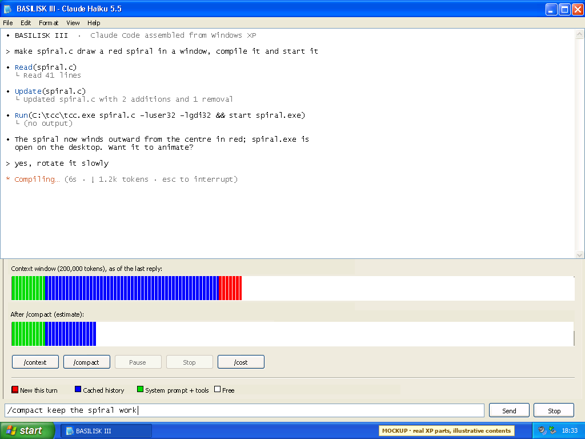
| Part | Taken from | Does | Space |
|---|---|---|---|
| Transcript | Notepad | conversation | 60% |
| Context map | Defragmenter map + legend | system prompt+tools / cached / new / free | 30% |
| Buttons | Analyze, Defragment, Pause, Stop, View Report | /context, /compact, pause, stop, /cost | — |
Feasibility. The map is drawn by the defrag ActiveX inside MMC from real disk data; we can take the panel's frame, buttons and legend (buttons and statics are real children), but the map itself we would draw, in its sliver style. The metaphor is exact and needs no explanation: Defragment really is /compact.
Explorer's folder tree is the project; its Address bar is the prompt; Back/Forward are sessions.
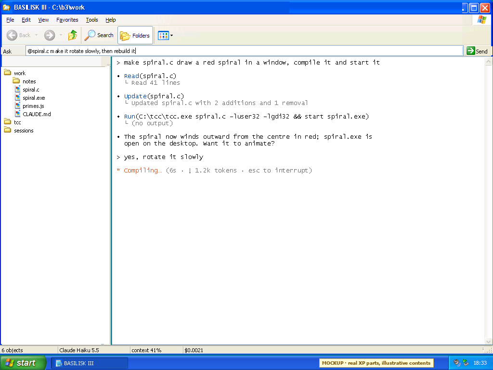
| Part | Taken from | Does | Space |
|---|---|---|---|
| Prompt | Explorer Address bar + Go | type, @-mention, Send | 3% |
| Files | Explorer folder tree | click to @-mention; open CLAUDE.md | 22% |
| Transcript | Notepad edit in the list pane's place | conversation | 70% |
| Status bar | Explorer status bar | objects · model · context · cost | 3% |
Feasibility. Explorer is one process with many threads; reparenting its panes is fragile (it rebuilds them on navigation). Safer: host our own SysTreeView32 styled identically and Explorer's address combo (ComboBoxEx32) which is a plain control. The Address bar's auto-complete is a free gift for history.
The approval-centric layout: plan, always-allowed list, modes, and a real MessageBox asking.
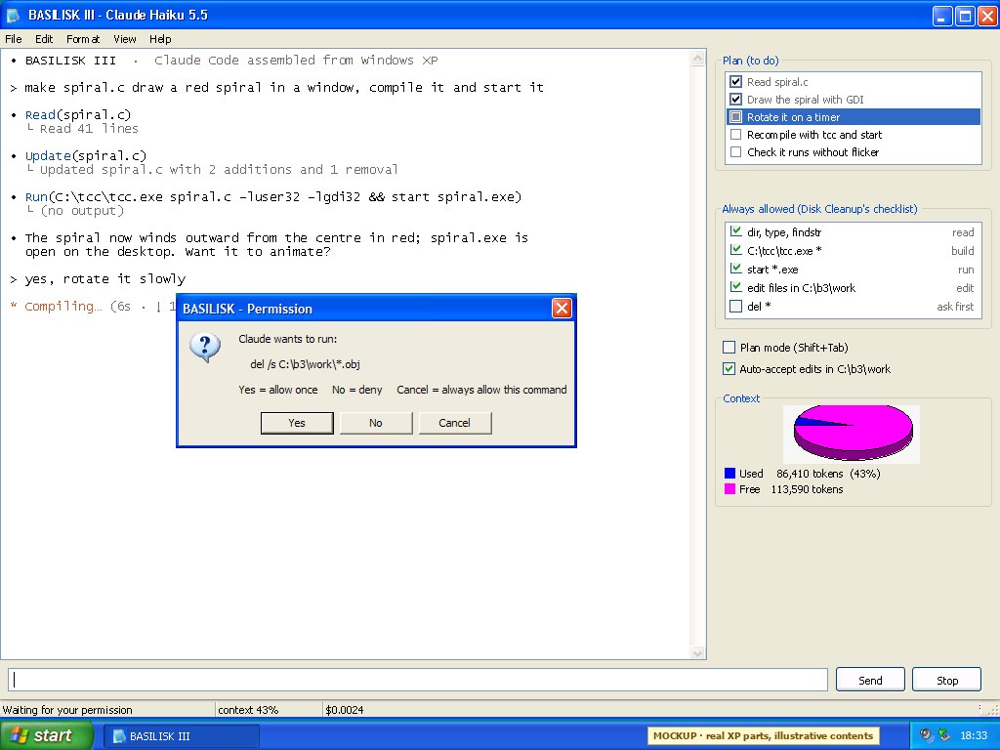
| Part | Taken from | Does | Space |
|---|---|---|---|
| Transcript | Notepad | conversation | 70% |
| Plan (to do) | Windows Components list | live plan | — |
| Always allowed | Disk Cleanup green-tick list | which commands run without asking | — |
| Modes | themed check boxes | plan mode, auto-accept edits | — |
| Permission prompt | MessageBox | Yes = once, No = deny, Cancel = always | modal |
Feasibility. MessageBox is the easiest real part of all: the client calls it. Yes/No/Cancel mapping is clumsy: a TaskDialog-like custom dialog built from a real #32770 with three relabelled buttons reads better. The check lists are list views we can fill.
WordPad's RichEdit as the transcript: real colour, bold tool names and red/green diffs; the Run box as the prompt.
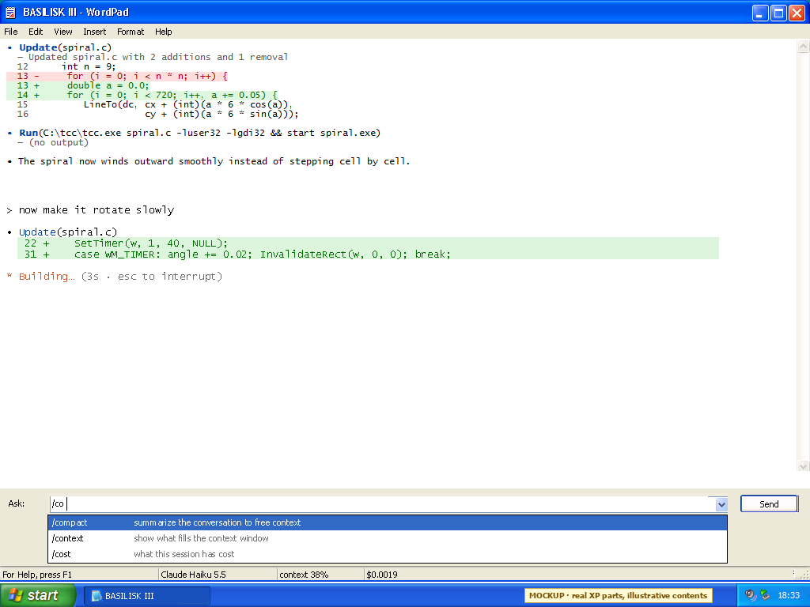
| Part | Taken from | Does | Space |
|---|---|---|---|
| Transcript | WordPad RichEdit | colour diffs, bold names | 75% |
| Prompt | Run dialog combo + its drop-down | history, slash completions | 6% |
| Status bar | WordPad status bar | model · context · cost | 3% |
Feasibility. Very buildable: the client streams RTF into WordPad with EM_STREAMIN/EM_SETCHARFORMAT (cross-process needs a buffer in WordPad's memory, or simply write an .rtf and EM_REPLACESEL plain text then format ranges). The Run combo is a plain ComboBox; its drop-down list we fill.
Volume Control's faders as the controls Claude Code really has: effort, output length, thinking; Mute boxes become modes.
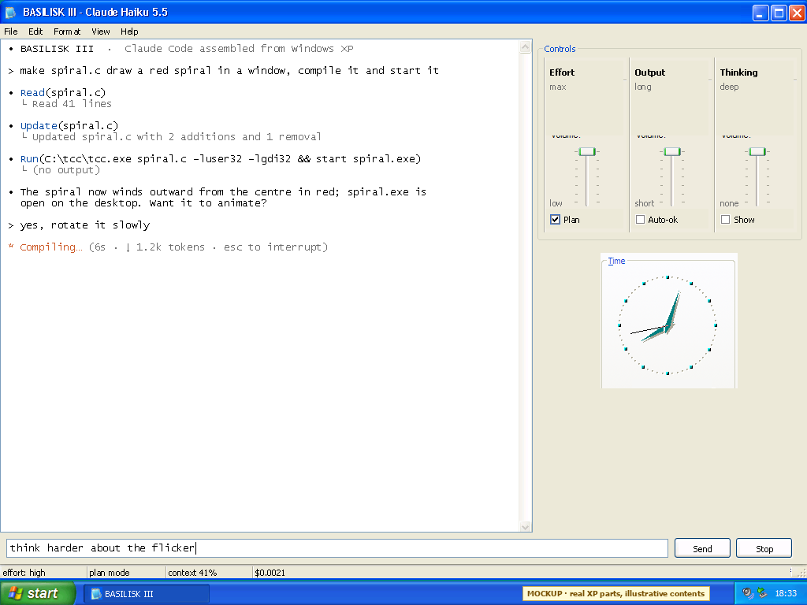
| Part | Taken from | Does | Space |
|---|---|---|---|
| Transcript | Notepad | conversation | 66% |
| Faders | Volume Control columns | effort, output length, thinking depth | sidebar 34% |
| Mode boxes | the columns' Mute check boxes | plan, auto-accept, show thinking | — |
| Clock | Date and Time | time | — |
Feasibility. The faders are msctls_trackbar32 controls (sndvol32 is one process): we can reparent a column and read TBM_GETPOS. Fewer than three faders would be more honest: effort is the one that matters.
The shell's flying-papers copy animation docks above the prompt while a tool runs, with live output.
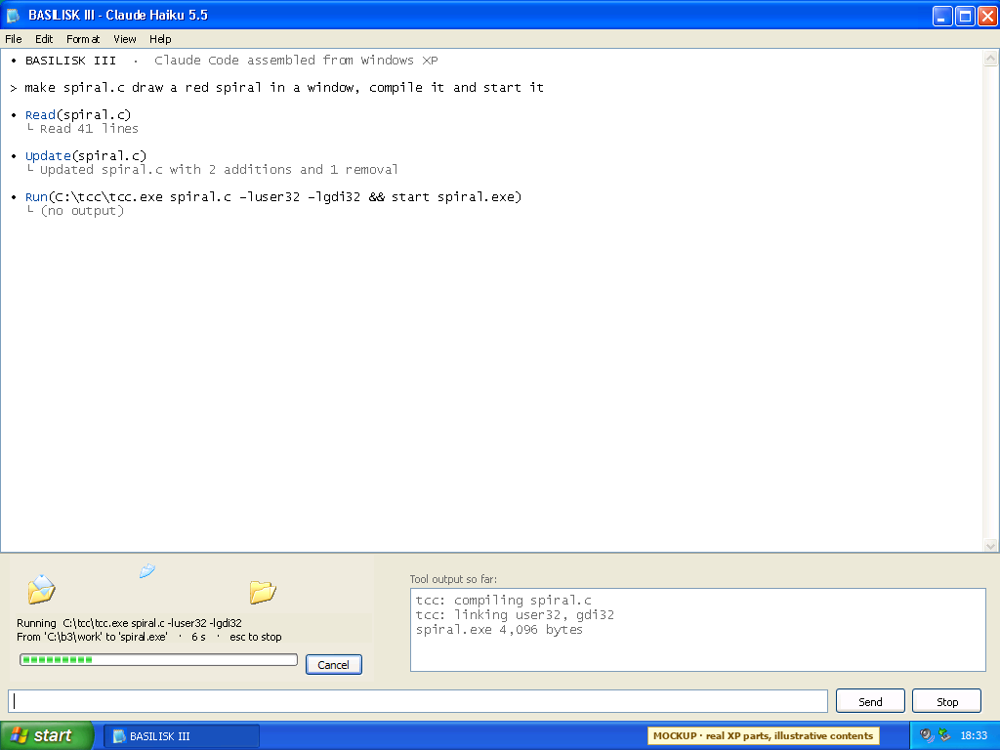
| Part | Taken from | Does | Space |
|---|---|---|---|
| Transcript | Notepad | conversation | 68% |
| Animation + progress | shell Copying… dialog (SysAnimate32 + progress bar) | something is running, for how long; Cancel = Esc | 17% |
| Tool output | an edit | last lines of output, live | — |
Feasibility. The animation is a SysAnimate32 control playing a resource from shell32.dll: we can create our own Animate control with ACM_OPEN on shell32's copy AVI, no reparenting needed. The strip appears only while a tool runs.
The 3.11 build, tidied: Terminal transcript, a normal-sized Clock, Calculator's display as the bill, a Cardfile to-do card, and 3.11's own Find dialog as the prompt.
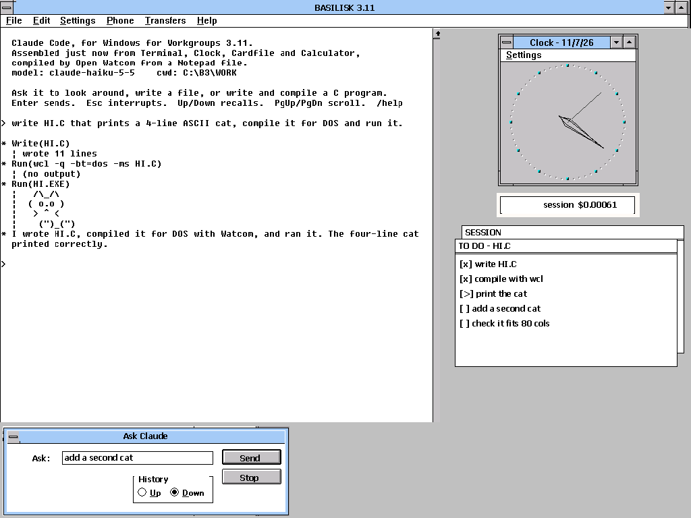
| Part | Taken from | Does | Space |
|---|---|---|---|
| Transcript | Terminal (real capture of today's build) | VT-100 scrollback | 64% |
| Clock | Clock | time | — |
| Bill | Calculator's display | session cost | — |
| To do | Cardfile card | the plan, on a card | — |
| Prompt | Find dialog (Find Next = Send, Cancel = Stop, Direction = history) | input | — |
Feasibility. Same mechanics the 3.11 lane already uses (SetParent works in Win16; one shared message queue makes it easier than XP). Cardfile's card is a real edit; Find is COMMDLG's and posts back to its owner, so we own it. The card text here is drawn in Tahoma Bold as a stand-in for the System font.
Mouse Properties' page rebuilt as BASILISK Settings: effort slider, mode check boxes, model combo.
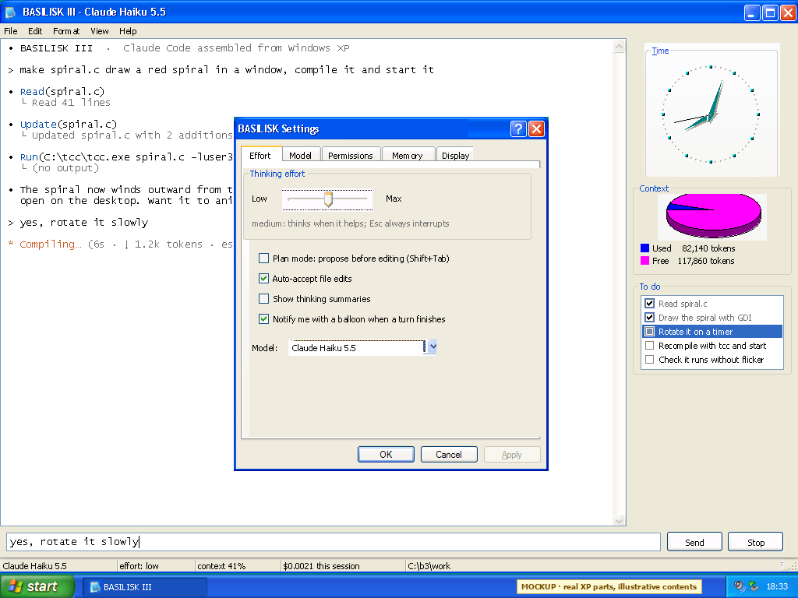
| Part | Taken from | Does | Space |
|---|---|---|---|
| Dialog + tabs | Mouse Properties sheet | Effort | Model | Permissions | Memory | Display | modal |
| Effort | pointer-speed trackbar | low ↔ max | — |
| Modes | themed check boxes | plan, auto-accept, thinking, notify | — |
| Model | a Luna combo box | Haiku / Sonnet | — |
Feasibility. Opening main.cpl and reparenting its controls is exactly what we do with Date and Time today. Simplest honest version: create a real property sheet from the client (PropertySheet API) and borrow only the trackbar's look.
Tabs (Display Properties) + WordPad-quality diffs + the plan + a slim context map + status line.
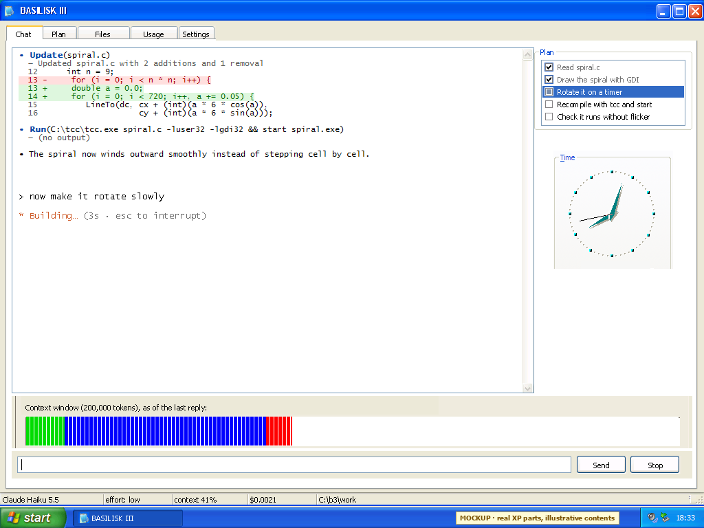
| Part | Taken from | Does | Space |
|---|---|---|---|
| Tabs | Display Properties | Chat | Plan | Files | Usage | Settings | 3% |
| Transcript | WordPad RichEdit | colour diffs | 62% |
| Plan | Components check list | live to-do | — |
| Clock | Date and Time | time | — |
| Context strip | Defragmenter map | context at a glance | 9% |
| Prompt + status | Find bar, status bar | input, facts | 8% |
Feasibility. Combines v02 + v07 + v06's plan + v04's map. Every part is one we have already reparented in kind (pages, lists, edits). The Usage and Settings tabs would host v03 and v11.
| Variant | Usefulness | Build effort | Risk |
|---|---|---|---|
| 01 Notepad, refined | ●●●●● | ●●●●● | ●●●●● |
| 02 Property-sheet tabs | ●●●●● | ●●●●● | ●●●●● |
| 03 Task Manager: the Usage tab | ●●●●● | ●●●●● | ●●●●● |
| 04 Defrag context map | ●●●●● | ●●●●● | ●●●●● |
| 05 Explorer workspace | ●●●●● | ●●●●● | ●●●●● |
| 06 Permissions and plan | ●●●●● | ●●●●● | ●●●●● |
| 07 WordPad transcript | ●●●●● | ●●●●● | ●●●●● |
| 08 Mixer controls | ●●●●● | ●●●●● | ●●●●● |
| 09 Busy strip | ●●●●● | ●●●●● | ●●●●● |
| 10 Windows for Workgroups 3.11 | ●●●●● | ●●●●● | ●●●●● |
| 11 Settings page (/config) | ●●●●● | ●●●●● | ●●●●● |
| 12 The suite | ●●●●● | ●●●●● | ●●●●● |
Dots: more = more useful / more work / more risk. Risk is mostly cross-process fragility (themed pages leaving stale copies when moved visibly, XOR-drawn clock hands ghosting on forced repaints, statics moved off their dialogs painting the wrong background, controls that need memory in their own process to be filled).